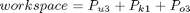
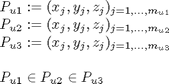
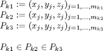
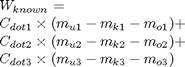

calunknownweight
Description: this function calculated the weighted amount of unknown info. it uses the GetImpLevInfo() function to break up unknown points into their areas
Contents
Function Call
- Inputs: Null
- Returns: unknownweight (double) weight of the points that are unknown
function unknownweight = calunknownweight()
Variables
global workspace
Total points in the environment

Get UNKNOWN point matrices P_u, in Lev 1->3

%remember level 1 is inside level 2 and 3 and level 2 is inside level 3
[level1_un,level2_un,level3_un]=GetImpLevInfo(workspace.unknowncoords);
Get KNOWN point matrices P_k, in Lev 1->3

%remember level 1 is inside level 2 and 3 and level 2 is inside level 3
[level1_kn,level2_kn,level3_kn]=GetImpLevInfo(workspace.knowncoords);
Get OBSTACLE point matrices P_o, in Lev 1->3
%remember level 1 is inside level 2 and 3 and level 2 is inside level 3 [level1_ob,level2_ob,level3_ob]=GetImpLevInfo(workspace.indexedobsticles); % if size(intersect(workspace.knowncoords,workspace.indexedobsticles,'rows'),1)>0 % keyboard % end % size(intersect(workspace.knowncoords,workspace.unknowncoords,'rows')) % size(setdiff(workspace.unknowncoords,workspace.knowncoords,'rows')) % % setdiff(workspace.knowncoords, workspace.unknowncoords,'rows') % if size(setdiff(workspace.knowncoords, workspace.unknowncoords,'rows'),1)>1 % keyboard % end
Take off known & obstacle and Multiply by weighting

%this is the difference in weighted unknown points unknownweight=(size(level1_un,1)-size(level1_kn,1)-size(level1_ob,1))*workspace.dotweight(1)+... (size(level2_un,1)-size(level2_kn,1)-size(level2_ob,1))*workspace.dotweight(2)+... (size(level3_un,1)-size(level3_kn,1)-size(level3_ob,1))*workspace.dotweight(3); if unknownweight<0 keyboard end